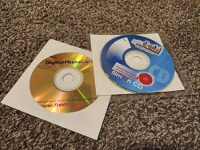

Equipment
You will need some basic equipment before you can preserve your old media. Listed below are the needed devices for each format. Regardless of what you are digitizing, a computer is required and it is strongly recommended that you have at least two separate data storage solutions prepared to place copies of your newly preserved media.
What you need for preserving discs
In addition to your computer and storage solutions, to back up discs you need the appropriate disc drive (see below) and, in the case of video, also need the MakeMKV software which can be downloaded here.
- CD drive --> Only for audio and photo CDs
- DVD drive --> Audio and photo CDs and DVDs
- BR drive --> Audio and photo CDs, DVDs, and Blu-ray discs
Don't worry if your drive has a "ROM" or "RW" code on it. The purpose of this process is to read discs, not write to them, so these codes will not matter.
If you have miniCDs or miniDVDs, the same rules apply for which drive you need to have. Just make sure the drive has a tray and is not slot-loading. In some cases, a specific camcorder is needed to read these discs. Feel free to inquire about this by emailing me here.
If you have UHD discs to preserve, that will require a direct consult with me as it requires limited and specialized hardware and software. You can email me here to ask about that.
Once your drive and applicable software are installed, you are ready to go. Instructions for preserving your discs can be found here.
What you need for preserving tapes
In addition to your computer and storage solutions, to digitize tapes you will need:
- a device to play them (either a VCR or camcorder)
- an RCA to HDMI converter
- a video capture device
- and the VLC media player software which can be downloaded here
- BONUS: if you want to be able to watch your tapes playback as you digitize them, you can also include an HDMI splitter in your setup. This takes one HDMI picture and sends it to two different displays. In our case these would be the capture device, and then a separate monitor or TV.
For VHS-C tapes, adapters do exist to fit them into VCRs if preferred.
RCA to HDMI adapters and video capture devices can be found for around $10 - $20 online or in local retailers.
When buying the capture device, be sure it is HDMI-in/USB-out, not the other way around. Or if you are investing in a more serious capture card for other ventures, that will do just fine as well.
If you want to go the extra mile and get an HDMI upscaler instead of an adapter, you can certainly do that! However, since the native resolutions of videotape formats are so low, this would likely do little to improve their quality.
If your tape player has S-video out, that would be better than RCA. In which case, finding an S-video to HDMI adapter would be ideal. If your tape player only has RF out, I would recommended finding a different player or reaching out to me for a consult.
Each device will hook into each other like so:
Tape player --> RCA to HDMI adapter --> HDMI splitter (optional) --> video capture device --> computer
If an HDMI splitter is being used, connect a cable from its second output port to a separate display for your viewing.
With your hardware and software ready to go, you are set to start digitizing some tapes! Instructions for that can be found here.
Process to preserve discs
Discs really are easy to preserve. It often doesn't amount to more than putting your disc in and hitting a button or two. Let's start with Audio CDs.
Audio and Photo CDs
- Insert the disc into your computer and access it
- Select everything on the disc and copy it to your chosen storage solution. I recommend placing files from each disc into their own respective folder.
- Rinse and repeat! See, I told you it was easy!
Don't forget to make a copy of your preserved files to another storage device for redundancy
DVDs and Blu-rays
If the files on your DVDs or Blu-rays are stored just like you would on a flashdrive, then simply follow the instructions above for audio and photo CDs. If they are encoded to play in actual DVD or Blu-ray players, then follow these instructions:
- Open the MakeMKV software
- In the program preferences, change the minimum title length to less than what your shortest video would be.
- Insert the disc into your computer. MakeMKV will choose the correct drive if you have multiple installed. Give it time to load. NOTE: MakeMKV can only process one disc at a time.
- Once the disc information is populated, click on the disc drive image. The computer will take time to load more disc info.
- You will now be presented with how many "movies" are on your disc (usually 1, sometimes 2) and given the choice of where to put the output files. Make sure all movies are checked and your output is pointed to your chosen storage solution. Click the Make MKV button.
- MakeMKV will now make a viewable video file for each movie on your disc. This could take several minutes and even up to a half hour or more for blu-rays.
- Once the process is complete, go to where the output file should be. It will be called something like "A1_t00.mkv". If your disc had multiple movies, you will see additional files labled "t01", t"02" and so on. You will definately want to rename these to something that identifies what disc you just preserved.
- Congrats! Your disc has been preserved! At this point, you can eject the disc and MakeMKV will be ready for your next one.
NOTE: The .mkv files that are created from your discs don't often play on computers on their own. If this is the case for you, the VLC media player is an excellent program that plays .mkv files. That software can be downloaded here. If you would rather have your videos put into .mp4 format, you will need to convert them later.
Don't forget to make a copy of your preserved files to another storage device for redundancy